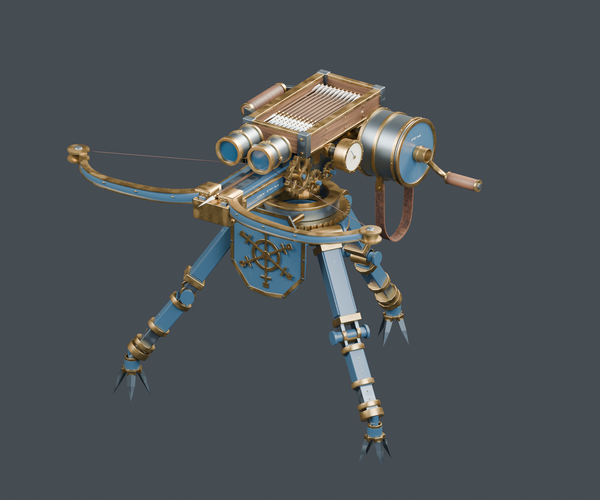
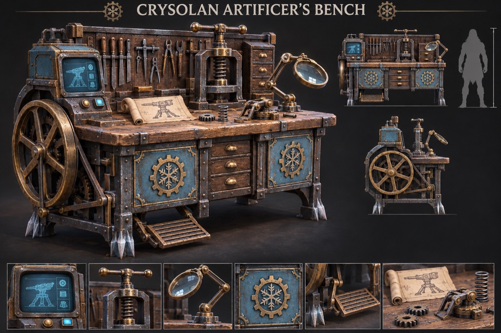
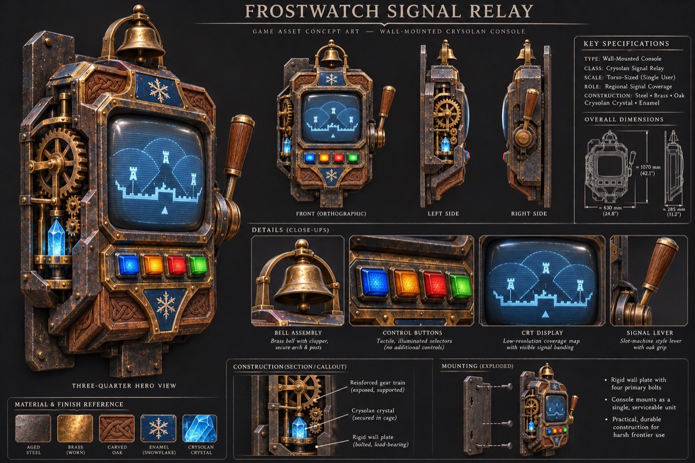
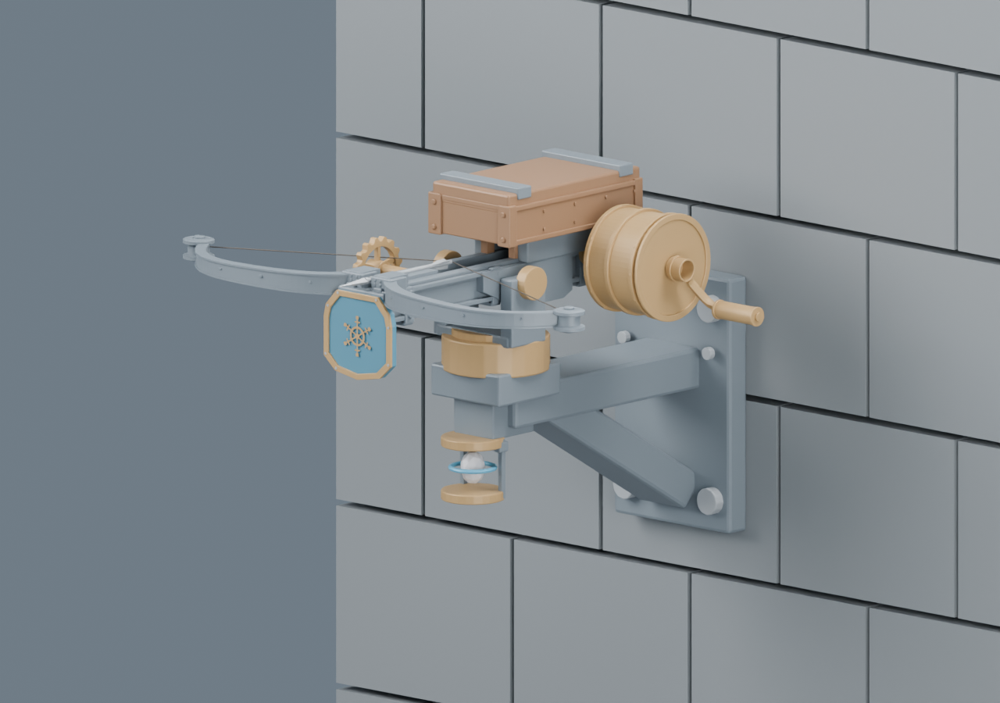
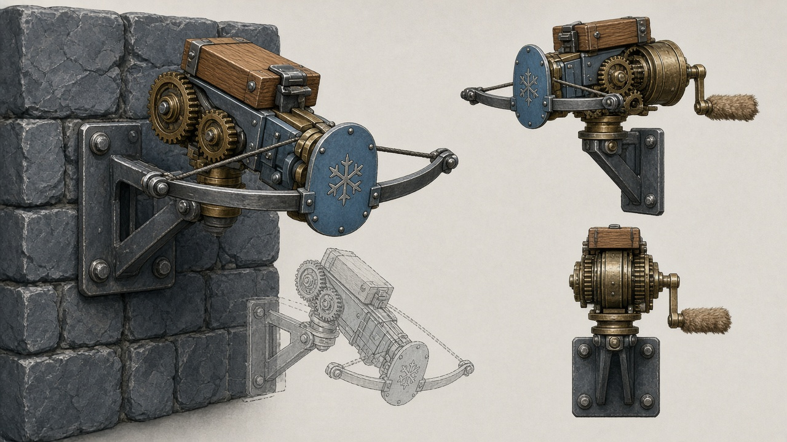
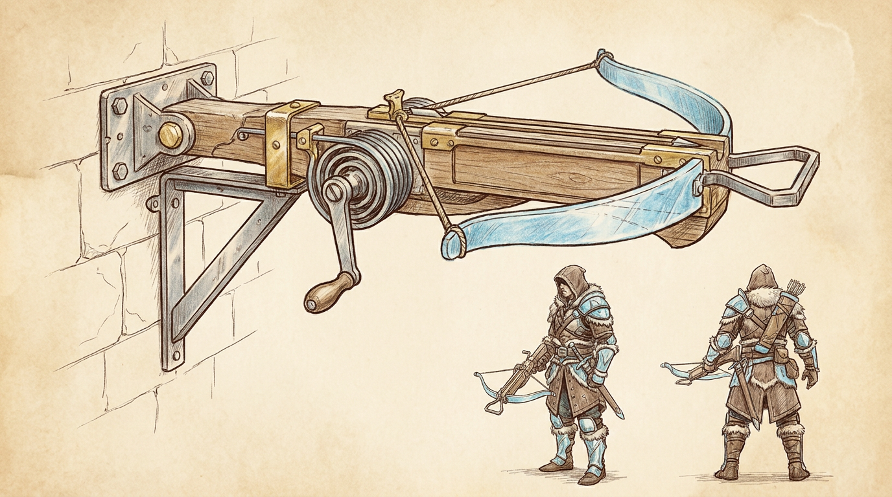
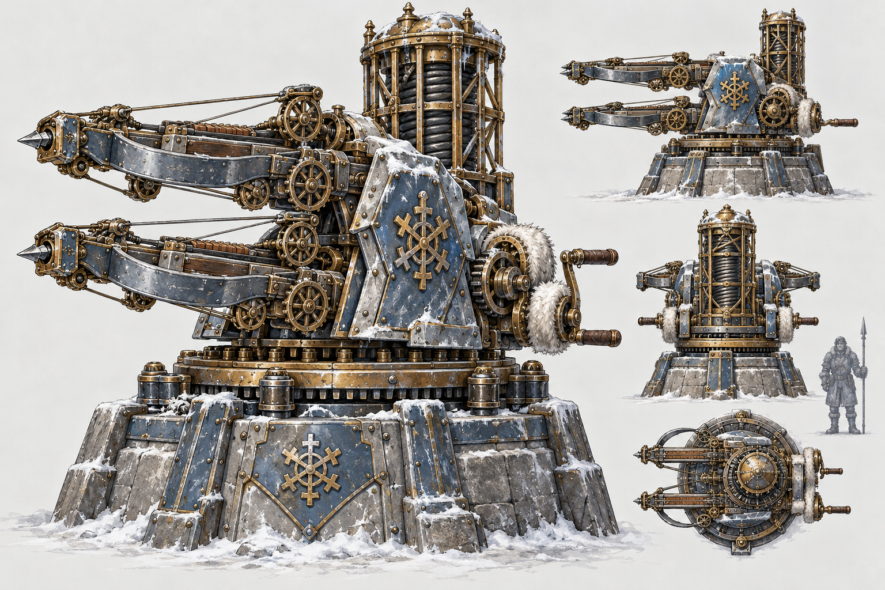

Frostwork Sentinel
Portable, self-sufficient field support. Make its components at the Bench and assemble it in the field. It does not depend on Relay coverage.
A workshop, a portable defender, and a connected line of permanent defenses. The Mechanist’s craft begins here, then grows into combat and survival.
Design update · 7 November 2026
These labels separate what has been tested from what has been decided or imagined. This is a design and development tour, not a claim that the whole system is playable or released.
The initial Crysolan Inventions release requires the Frostwork Sentinel, Frostwatch Signal Relay, Frostwatch Needle, and Crysolan Artificer’s Bench.
Portable, self-sufficient field support. Make its components at the Bench and assemble it in the field. It does not depend on Relay coverage.
The workshop unlocked by the Mechanist book. It anchors the planned component and schematic progression using vanilla materials.
Destructible regional power and command coverage. Upgrade through level 3 to increase its range, and link overlapping Relays into networks.
The lighter permanent turret, formerly called the Needle. It requires functioning Relay coverage, with authorized clan control and repair through a custom UI.
Craft a kit, choose a firing position, and watch the tripod lock into place. The Sentinel tracks threats, winds up its spring, and fires when its lane is clear. Its latest saved DevKit pass supports full 360° yaw; placement sets its default facing rather than a permanent blind rear arc.
The Sentinel is self-sufficient and does not need a Signal Relay. Each player can field two at once. A third successful deployment destroys the oldest. Hold interact for three seconds to recover a turret. It keeps its exact durability and redeploys with a fresh magazine. Recovered Sentinels have weight and do not stack. A repair kit restores a damaged recovered Sentinel; full-health items consume no kit.
The 24-bolt magazine refills after a ten-second cooldown when empty. The pivot blizzard shifts toward purple as ammo runs low, and its center shifts from white toward red as durability falls.

Tripo meshes supplied reference volumes. Houdini rebuilt the 16 modules with deliberate bevels, silhouettes, and UVs. The bowstring, launch channel, and scope mounts were refined around the moving parts.
The shield established glacier-blue enamel, aged brass, and exposed steel. The magazine and handle set the oak and leather benchmarks. Editable wear masks kept repeated legs and bolts from sharing conspicuous scratches.
The rigid rig supports deployment, idle, aiming, wind-up, release, reset, and shutdown. The firing cycle moves the bow, string, bolt, gears, crank, and gauge. The launch socket defines where the projectile exits.
The deployment kit, schematic, components, and recovery loop connect the prop to the game. The server checks target validity, range, line of sight, and alignment at release before spawning a bolt and spending ammo.
A practical Crysolan workstation for turning vanilla materials into precision components and crafted schematics.
The updated design combines a thick oak worktop, steel frame, blue-enamel cabinetry, a left-side treadle and flywheel, spring press, magnifier, rear tool board, and a schematic screen. The machinery should read as supported, usable parts of a real workspace.
The Mechanist book unlocks the Bench. The Bench makes the components used for the Sentinel’s field assembly and supports the staged schematic progression below.
Separate editable Relay and Bench Houdini blockouts are in progress in the source project. Concept approval and saved model files do not establish completed crafting or gameplay integration.

Book → Bench → Sentinel → Signal Relay → Needle. The turret unlocks follow this order strictly.
Unlock the Artificer’s Bench, the starting point for the new crafting route.
Craft and spend one Sentinel schematic to unlock the Sentinel stage.
After Sentinel, craft and spend one Relay schematic to unlock the Relay stage.
After Relay, craft and spend one Needle schematic to unlock the Needle stage.
Build the progression from materials already present in Conan. No new resource dependency, recipe quantity, purchase price, or range value is finalized here.
Make Sentinel components at the Bench, then assemble the Sentinel in the field. Permanent defenses belong to the Relay-powered line.
The saved Sentinel prototype uses the Crysolan Mechanist’s Primer and Frostwork Sentinel Schematic. The Primer currently teaches five component recipes: Tempered Mainspring, Clockwork Gearset, Riveted Mechanism Housing, Winterproof Gear Oil, and Wound Spring Drive. The Schematic teaches the deployment kit.
The historical handcraft prototype was tested with vanilla inputs and separate consumable unlocks. It did not enforce the new Sentinel → Relay → Needle chain or the new Bench workflow. The book, Bench unlock, crafted schematic costs, prerequisites, and recipe locations must be updated and tested together. The older recipe quantities are not presented as final balance for this release.
How players obtain the Mechanist book remains to be settled for the updated progression. Earlier suggestions about starter crafting or vendors are not treated as a confirmed acquisition route.
The old Signal Lever has grown into a narrow, torso-sized, wall-mounted command console.
Steel, brass, oak, and blue enamel frame a CRT-style screen with visible scanlines, colorful buttons, a top bell, exposed gears and a crystal on the left, and a slot-machine-style lever on the right.

Two overlapping Relays connect, and commands propagate through that connected network. A single Relay can link several other Relays where their overlap regions remain separate. Network membership carries commands; each turret still needs its own local functioning coverage.
If three Relay ranges cover the same location, the newest Relay self-destructs and causes proximity damage. This is about a shared triple-covered area, not a limit of two neighbors per Relay.
If a Relay is destroyed and a network splits, the surviving disconnected networks continue working independently. Turrets outside all surviving coverage disable.
Deduplicate commands as they pass through overlaps so loops or multiple paths do not repeat the same action. Exact command ordering and conflict resolution still need definition.
The earlier wall lever used explicit Arm and Disarm commands, a placement-radius preview, connected-device count, and armed/safe feedback. A third amber “guest” mode, remembering state through reconnect, and the exact handling of an already-winding shot were proposals, not verified features.
The Relay replaces that older standalone control concept. The previous “latest authorized command wins” suggestion is not asserted as the final network conflict rule. The new networking, level upgrades, power coverage, overload, and custom UI still require implementation and multiplayer tests.
Formerly Frostwork Picket. The current name is Frostwatch Needle; legacy filenames and older artwork keep the Needle name for traceability.
A lighter permanent crossbow for narrow defenses, with a short bracket that keeps the bow clear of the wall. Lower firepower than the Sentinel is the design direction; exact balance is still open.

The visible core sits beneath the swivel on the fixed bracket. The proposed health signal is a white heart moving toward red as damage increases; ammo is a separate blue frost orbit moving toward purple as it empties.
A bolted backplate and short bracket carry the load. The yaw bearing and pitch trunnions keep the weapon's range of movement readable.
Test firing down from one and two foundations up. The receiver, bowstring, and bolt must clear the bracket and masonry throughout the firing cycle.
The same compact weapon could sit on a floor plinth. Wall and floor placement are the focus; ceiling mounting remains a future proposal. Relay coverage is required for permanent-turret power.


Silhouette. A tall, four-bolt backplate meets a short triangular bracket. A narrow glacier-blue half-shield sits forward of a single oak magazine and an exposed brass spring drum. The Needle should read as part of the wall, with no tripod or carry handle.
Movement. The wall plate and bracket stay fixed. A swivel above the bracket turns the yoke, and two visible trunnions let the receiver pitch inside it. Put the spring drum toward the pitch axis so its rear clears the wall when the nose dips. Keep the service crank accessible from the side.
Model as separate parts. Wall plate and bracket, swivel and yoke, receiver and bow, magazine, shield, spring drum and crank. Use the same swivel interface for a future floor plinth.
First clearance study. Block out the nose, bow tips, spring drum, and full string sweep. Compare a flush mount with a short stand-off against a target two foundations below. Check the launch lane against the actual wall lip before choosing the bracket depth or aim limits.
Design decision. This pass keeps the single crossbow and blue half-shield from the archived CG-09 brief and uses our newer direction of lower firepower than the Sentinel. The original brief gives two different magazine capacities, so capacity and other combat numbers are left open.
A maker and operator of inventions, with a role that extends beyond combat into survival.
The Mechanist begins with the book, Artificer’s Bench, crafted components, and strict schematic progression. The ability system sits above the devices as the first step toward a broader Crownlands ability system. A turret’s automatic behavior still matters; abilities add ways for qualified players to command their authorized devices during a fight.
Self-sufficient Sentinels and Relay-powered permanent defenses keep distinct roles. Ability eligibility, clan authorization, server authority, cooldown feedback, and each weapon’s own aiming and safety checks need to work together.
Mark a threat for nearby authorized turrets. Each turret still checks its allowed firing direction, cover, and safety at release. This was the suggested first ability prototype, not a completed feature.
Briefly speed up a selected turret’s wind-up or reset, with a cooldown and a readable gauge cue. Duration, cost, magnitude, and balancing remain open.
Service a turret at short range using a repair item, with interruption feedback if the Mechanist takes a hit. This ability proposal is separate from the confirmed planned permanent-turret repair UI.
Future inventions could improve resource output. A fuel-powered multiplier is an idea to explore, not a finalized recipe, fuel type, rate, or duration.
Extend Crysolan engineering into defensive structures and support for settlements. No specific new structure or implementation is promised here.
Explore traps as another branch of Mechanist engineering. Their triggers, damage, placement, ownership, and progression are still to be designed.
The shared command interface can eventually support other Crysolan inventions. These survival ideas and active abilities are not requirements already implemented by the current Sentinel prototype.
Keep each invention distinct in silhouette, behavior, and battlefield role. The following ideas are preserved from the original tour and concept discussion.
A more potent permanent fortress defense. The archived art explores twin repeating crossbows, heavy steel and stone support, overlapping blue shields, a rotating brass ring, and a tall caged mainspring tower.
The later proposal splits the heavy chassis into a heavy-bolt version and a slower explosive-shell artillery version. Slower recovery, an arcing shot, minimum engagement distance, and vulnerability up close were balancing suggestions, not settled requirements.
Whether explosive shells damage buildings remains undecided. Combatant-only damage, friendly-fire protection, and cover checks were suggested for an initial test, not implemented or approved balance.

A portable crowd-control variant with a short frost cone. Icy wind, sparkling shards, modest damage, and a capped slow were proposed so it feels different from the bolt turret. Slow stacking, limits, and reach remain open; permanent freezing was not the goal.
Inspired by the Assassin’s Wake of Fire in Diablo II: successive widening, triangular walls of flame travel toward a target. Proposed behavior follows reasonable ground slopes, stops at solid cover and gaps, and ties damage to the visible wave. It remains an unimplemented area-denial concept.
The original proposal was to share the two-active portable limit across Sentinel variants, while fixed Needles and Bastions use separate building limits. This has not been finalized or implemented for those variants. A third portable deployment must not be assumed to remove a permanent defense.
Older Picket artwork described a heavier pedestal turret and different magazine/traverse figures. The current Needle direction supersedes that: a lighter, flexible permanent defense with wall-first mounting and lower firepower than the Sentinel. Capacity and final aim limits are still open.
The early art direction excluded glow and crystals. The newer approved Sentinel status core, Relay crystal and screen, and Bench schematic screen supersede that old visual restriction. Keep the Crysolan steel, brass, oak, blue enamel, and snowflake identity without treating every old prompt as a current requirement.
The latest Sentinel changes are saved in DevKit. The wider release system remains planned.
The saved two-player PIE report verifies full-circle yaw, shortest-path rear turns, cover and ally blocking, combat after the owner dies, ownership rebind after respawn, and stock fighter and hyena damage through shutdown.
The same report verifies restored names, repair by dragging in inventory and hotbar, reverse dragging, one kit consumed for a damaged item, and no kit consumed at full health.
An earlier CoreV2 package cooked successfully. The newer 7 November combat and repair fixes were not cooked or uploaded. No updated dedicated-server or adverse-network certification is claimed.
Known limits: tooltip text still appends a numeric item ID once after the correct name. The strap review was a visual spot check, not exhaustive collision proof. These checks were reported by the source project; this HTML update did not rerun DevKit.
The Needle’s existing files still use the Needle name. Houdini v04 was reopened, controls were checked, and sampled yaw/pitch/crank clearance checks passed within the prototype’s limits. These are sampled geometry checks, not continuous collision or completed permanent-turret gameplay.
An earlier standalone status-core prototype showed independent white-to-red health and blue-to-purple ammo on both PIE clients. It still needed wiring to the playable permanent turret. The new Relay dependency, shared control UI, strict schematic progression, and Bench gameplay have not been verified.
Finish the four-piece foundation before treating the larger invention family as release-ready.